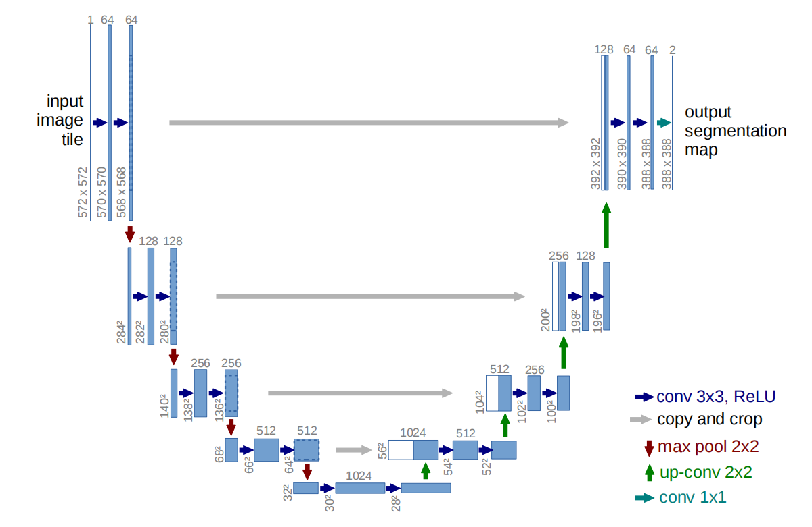
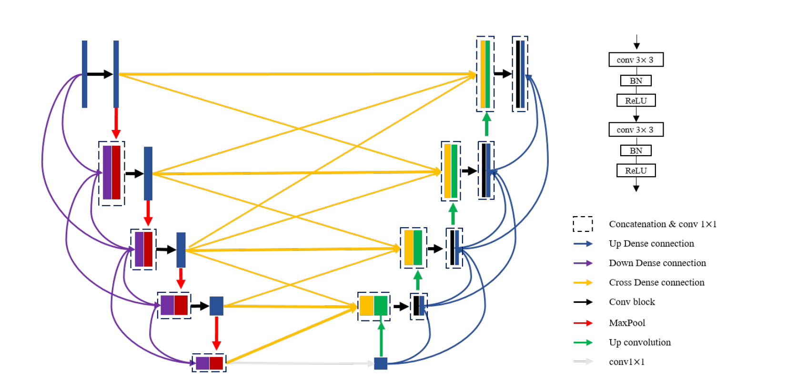

在语义分割领域，UNet是一种流行的架构。本文介绍UNet的基本特点与网络结构。
概述
UNet是一种流行的卷积神经网络（CNN）架构，最初是为了解决生物医学图像分割问题而设计的。自2015年首次提出以来，UNet因其卓越的性能和高效的结构而在医学图像处理领域广受欢迎。本文是对UNet原理的简要介绍。在下一篇文章中将介绍从零实现UNet。
UNet架构的特点
对称结构：UNet的架构呈“U”形，由两部分组成：收缩路径（编码器）和扩展路径（解码器）。
收缩路径：通过一系列卷积层和最大池化层逐渐降低特征图的空间维度，从而捕获图像内容。
扩展路径：通过上采样和卷积层逐步恢复特征图的空间维度，同时保留重要的位置信息。
跳跃连接：UNet的一个关键特点是跳跃连接（Skip Connections）。它们将收缩路径中的特征图与扩展路径中的对应层相连。这种设计有助于在上采样过程中恢复精细的细节，改善了网络在图像分割任务中的性能。
精确的定位：由于跳跃连接的作用，UNet能够有效结合高级特征（从收缩路径）和位置信息（从扩展路径），在保持上下文信息的同时实现精确的定位。
UNet的网络结构
 以上是U-Net网络架构图，具体如下：
输入层：输入层接收固定大小的图像（例如572x572像素）。
收缩（编码）路径：由多个重复的模块组成，每个模块包括两个3x3的卷积（未填充），每个卷积后跟一个ReLU激活函数。 每次连续的卷积之后，进行2x2的最大池化操作以减小特征图的维度，并将特征通道数加倍。
底部层：在收缩路径的末端，模型通过两个3x3卷积（未填充）和ReLU激活，紧接着一个2x2的上采样操作来扩展特征图。
扩展（解码）路径：类似于收缩路径但操作顺序相反。使用2x2的上采样操作，将特征图的维度逐渐恢复。 每次上采样后，将得到的特征图与收缩路径中对应层级的特征图（通过跳跃连接）结合。 结合后的特征图经过两个3x3卷积和ReLU激活处理。
输出层：最后，通过一个1x1的卷积将特征通道映射到所需的类别数，得到最终的分割图。 具体代码实现将在下一篇文章中介绍。 # UNet的模型改进 为了充分提取有效特征，加强不同语义信息间的融合，或解决梯度消失、过拟合等问题，许多研究者在UNet网络模型的基础上进行了诸多尝试和改进，包括结构上的改进以及预处理、训练等阶段的非结构改进，在一定程度上提高了网络的精度和准确率，进一步提高了网络的分割性能。
UNet网络模型结构主要包括编码器、解码器和跳跃连接部分。编码器用于提取抽象特征和上下文信息，解码器用于将图像逐步恢复至原始尺寸，而跳跃连接则将不同层次的特征进行融合。不同的结构部分具有其特有的功能和作用。因此，对网络结构进行改进能够最直接地影响网络的性能，这也是目前普遍使用的改进措施。
UNet模型在结构上的改进主要包括编/解码器、跳跃连接以及整体结构的改进。大部分改进工作是在原有模块的基础上，增加残差模块、Dense 模块、Inception 模块、Attention 模块等经典网络模块，或综合运用其中的几种模块，以提高网络的分割性能。残差模块和 Dense 模块的基本思想是一致的，即：将浅层的输出结果跨层输入到深层网络中，以增强特征融合，加快网络的收敛速度，同时避免梯度消失与爆炸。
有学者在UNet的基础上引入Dense 模块形成了新的网络架构MDUNet。该网络通过三种不同的密集连接，将不同尺度的特征进行融合，从而加强了特征在当前层的传播 ，同时减少了单一密集连接造成的过拟合。 
Inception模块通过使用不同尺度的卷积核进行多尺度特征学习来提高分割精度，同时使用 1×1卷积改变特征维度，以大大减少参数量。在原Inception模块的基础上，将5×5和7×7大小的卷积核分别因式分解为2个3×3卷积核和3个3×3卷积核，然后将三种卷积核的输出拼接在一起，可以获得不同尺度的空间信息。Inception模块的使用使得网络在保证感受野的前提下，减少了参数量，进而降低了内存需求 。
Attention模块通过给特征分配权重（即注意系数），进而有重点地提取有效特征，抑制无关特征。